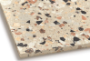

2024年
問題152 硬性床材の特徴に関する次の記述のうち，最も不適当なものはどれか．
（1）大理石は，耐アルカリ性に乏しい．
（2）テラゾは，耐酸性に乏しい．
（3）セラミックタイルは，耐摩耗性に乏しい．
（4）花岡岩は，耐熱性に乏しい．
（5）目地のモルタルは，耐酸性に乏しい．
2024年
問題152 正解（3） 頻出度AAA
セラミックタイルの耐摩耗性は大きいので，通路やポーチの舗装材としてよく用いられる．
硬性床材については2024-152-1表参照．
2024-152-1表 硬性床材一覧
| 種類 | 組成 | 特徴 |
| 大理石 | 変成岩の一種，結晶性石灰岩（主として方解石）が主成分 | 層状．石質は密．吸水率は低く，耐酸性，耐アルカリ性に乏しい． |
| 花崗岩 | 火成岩の一種．石英，長石，雲母等の結晶の結合体 | 塊状．非常に固く密である．アルカリ，酸，油には耐性があるが耐熱性に乏しい． |
| テラゾー※ | 大理石片．ポルトランドセメント | 多孔質．組成上大理石と似ている．耐酸性に乏しい． |
| セラミックタイル | 粘土にロウ石，陶石，長石，石英等を粉砕して加えたもの | 耐酸性，耐アルカリ性があり，耐摩耗性も大きい． |
| モルタル，コンクリート | 砂利，砂，ポルトランドセメント | 多孔性．耐酸性に乏しく表面の凹凸が激しい． |
※テラゾー：人造石の一種．主に大理石などの砕石粒（種石という）とセメントを練り混ぜたものを塗り付け，硬化後に表面を研磨・つや出しして仕上げたもの．磨耗に強く，耐久性などに優れており，床・壁などに用いられる（2024-152-1図参照）．

出典 株式会社 エービーシー商会
https://www.abc-t.co.jp/columns/201904terrazzo01.html